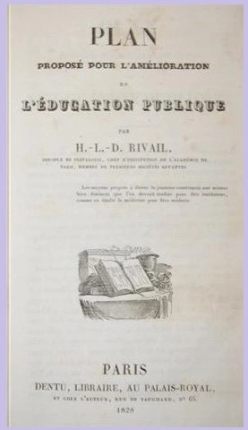

O Professor Rivail
O Professor Hippolyte Léon Denizard Rivail, antes de assinar como Allan Kardec, foi um dos maiores expoentes da pedagogia francesa no século XIX. Sua estrutura mental, forjada no rigor científico e na educação humanista, foi o instrumento preciso escolhido pela Espiritualidade Superior para a Codificação.
A Escola de Pestalozzi e o Método Intuitivo
A base do pensamento de Rivail foi construída no Instituto de Yverdun, na Suíça, sob a tutela direta de Johann Heinrich Pestalozzi. Ali, ele absorveu os princípios que revolucionariam a educação mundial:
- Educação Integral: O desenvolvimento harmônico das faculdades físicas, intelectuais e, sobretudo, morais.
- O Método Intuitivo: O aprendizado que parte do concreto para o abstrato, priorizando a observação e a experiência direta.
- Educação de “Dentro para Fora”: A visão de que o educador deve auxiliar o desabrochar das potências internas do aluno, e não apenas depositar informações.

Moralidade e a Abolição dos Castigos
Uma das maiores contribuições de Rivail (e um dos pontos centrais de sua identidade pedagógica) foi a luta contra os métodos disciplinares violentos da época. Numa França onde a palmatória era comum, Rivail defendia:
- Abolição de Castigos Físicos: Seguindo a escola pestalozziana, acreditava que o medo e a humilhação bloqueiam o aprendizado e endurecem o caráter.
- Disciplina pelo Afeto e Razão: A autoridade do professor deveria emanar do exemplo e do amor, e não da força. O erro era visto como uma oportunidade de reeducação, nunca como motivo de punição vexatória.
- A Moral como Eixo Central: Para Rivail, “instruir” era diferente de “educar”. Enquanto a instrução fornece dados, a educação forma o homem de bem. Este conceito é o embrião do que conhecemos hoje na doutrina como reforma íntima.
Da Sala de Aula à Codificação
A transição do Professor para o Codificador não foi uma ruptura, mas uma continuidade metodológica. Ao deparar-se com os fenômenos das “Mesas Girantes”, Rivail aplicou o Rigor Pedagógico:
- Observação e Crivo da Razão: Aplicou a lógica para organizar as mensagens mediúnicas em um corpo doutrinário coeso.
- Didática do Pentateuco: A estrutura de O Livro dos Espíritos (perguntas e respostas) reflete sua habilidade em tornar temas metafísicos complexos acessíveis a todos.
Obras Acadêmicas de Referência
| Ano | Obra Original | Importância Histórica |
|---|---|---|
| 1828 | Plan proposé pour l’amélioration de l’instruction publique | Tese premiada pela Academia Real de Arras sobre a reforma do ensino. |
| 1831 | Grammaire française classique | Obra que uniu a lógica do raciocínio ao ensino da língua. |
| 1846 | Manuel des examens pour les brevets de capacité | Guia técnico essencial para a formação de novos professores na França. |
Este artigo é uma contribuição do Lar Espírita Cristão - Itatiba (LEC) para a valorização da memória histórica e o estudo sério da obra de Allan Kardec.